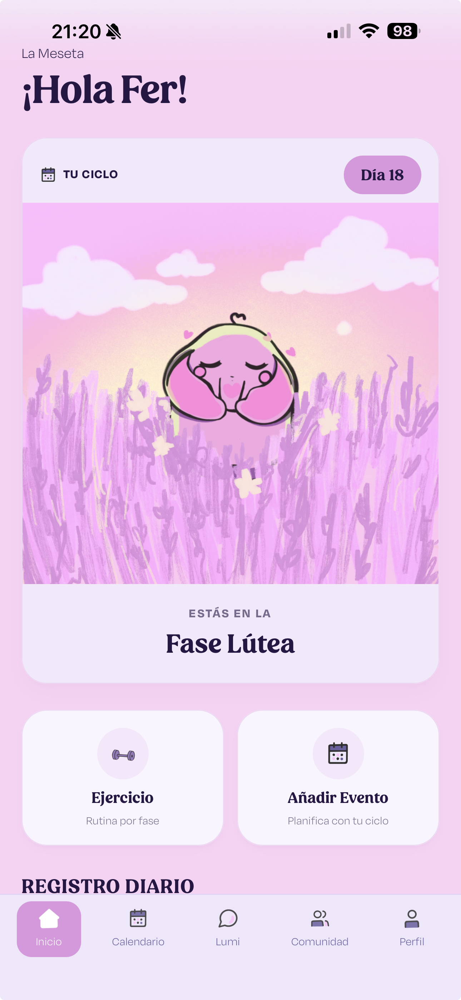
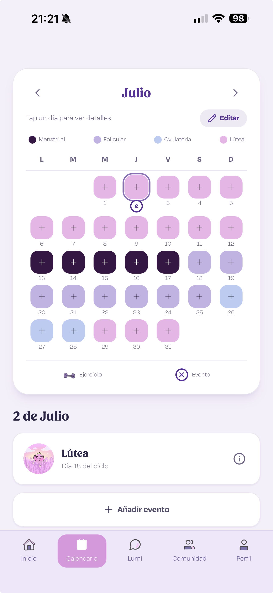
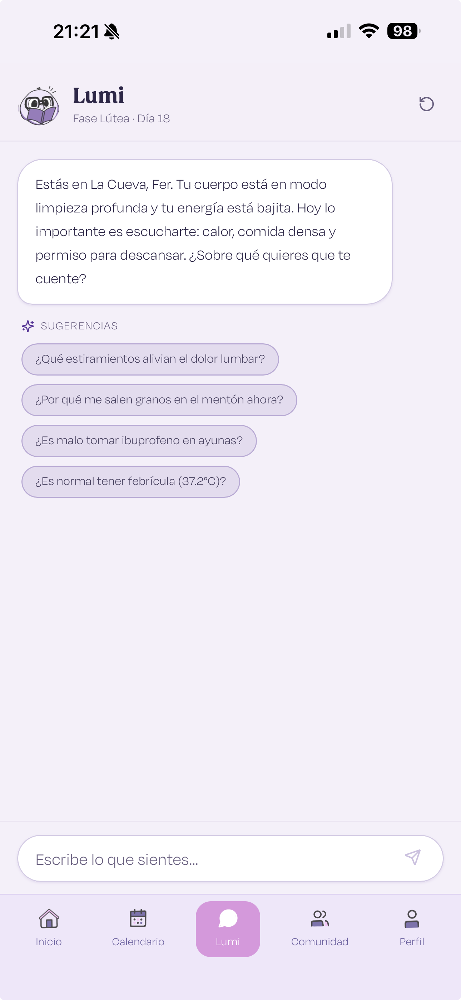
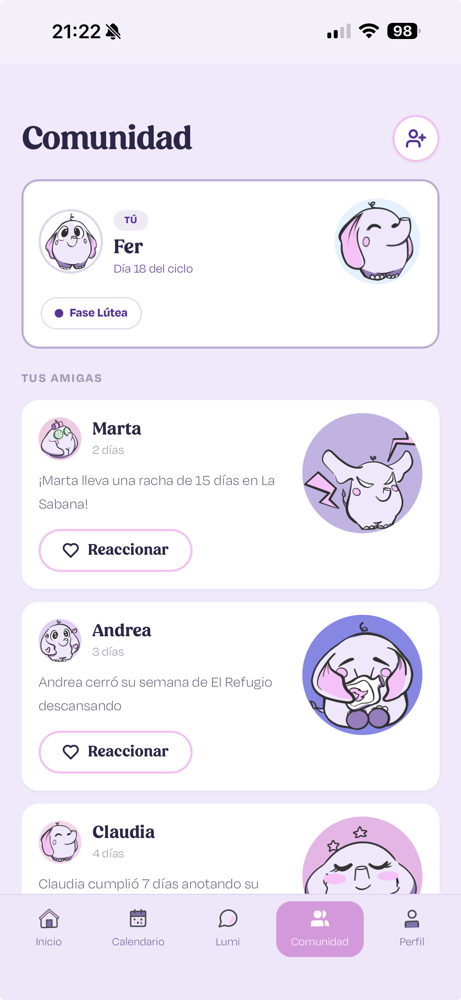
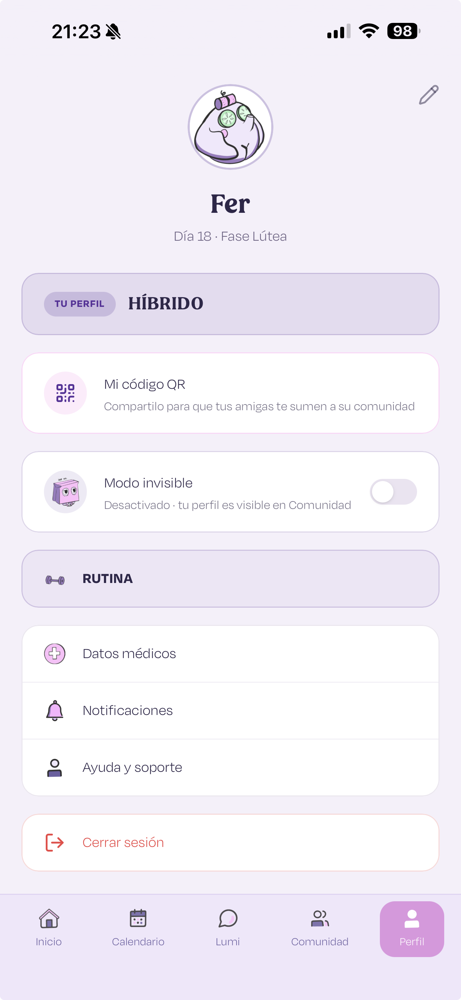
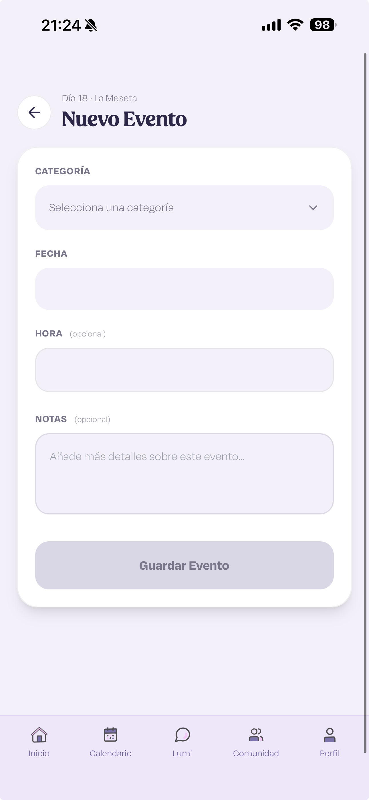

LUMA
Infraestructura de inteligencia biográfica diseñada para devolverle la soberanía a la mujer sobre su propio ritmo.
Rol
Lead Product Designer
Equipo
4 personas
Herramientas
Figma · Lovable · React · TypeScript
Contexto
Trabajo de Final de Máster · BAU
01 — El problema
Diseñar para el promedio es
diseñar para nadie.
Durante décadas, la industria FemTech ha operado bajo el sesgo de la regularidad. Se impuso un estándar universal de 28 días que no representa la realidad biológica, sino un promedio estadístico. El resultado: un sistema que excluye a quienes no encajan en la norma.
El sesgo
Apenas hace 33 años se volvió obligatorio incluir a las mujeres en estudios clínicos.
El conflicto
El 40% de las usuarias (SOP, estrés, perimenopausia) viven en conflicto con apps que etiquetan su ritmo natural como un "error de sistema".
El reto
¿Cómo transformar una métrica clínica en una infraestructura de soberanía biográfica?
Mi contribución · Proyecto de equipo
02 — Las protagonistas
Entender el conflicto para
diseñar la solución.
Buscamos resolver dos tensiones fundamentales. No solo diseñamos una aplicación; diseñamos una nueva forma de habitar la biología.


LUMA no ofrece una experiencia única; se adapta para que Marta encuentre paz y Andrea encuentre potencia.
03 — La identidad: LUMA
Diseñar para la claridad,
no para la estadística.
La identidad de LUMA se aleja de la estética clínica tradicional para abrazar una narrativa de acompañamiento y sabiduría. Cada elemento visual comunica: "Te entiendo, te escucho y estoy aquí para guiarte."
Presentación ante el tribunal · Máster BAU
Nuestra voz se construye sobre tres pilares:
COMODIDAD
Empática y sin juicios: creamos un espacio seguro donde la vulnerabilidad es bienvenida.
CONTROL
Científica pero accesible: traducimos datos complejos en información accionable y clara.
CONFIANZA
Mentora experta: nos posicionamos como esa guía que siempre sabe qué paso sigue.
La mentora
Lumi: sabiduría, memoria y cero juicios
Acompañando este viaje creamos a Lumi, una mentora digital (elefante) que encarna la sabiduría y la memoria. Es una Autoridad Compasiva que actúa como espejo empático — nunca usa lenguaje de "error", "retraso" o "irregularidad negativa".
 Curiosa
Curiosa
 Feliz
Feliz
 Energética
Energética
 Empática
Empática
 Calmada
Calmada
 Reflexiva
Reflexiva
 Protectora
Protectora
 Descansando
Descansando
04 — La app en acción
Cada pantalla, una decisión de diseño.
LUMA no es un tracker: es un ecosistema completo que acompaña a la usuaria desde que abre la app hasta que cierra el día. Aquí cada sección tiene un propósito estratégico.

01 · Inicio
Dashboard del ecosistema activo, energía del día y recomendaciones según tu fase.

02 · Calendario
Vista mensual del ciclo con fases como ecosistemas, no como números clínicos.

03 · Chat con Lumi
IA conversacional que recuerda tu historial y adapta su tono a tu fase del ciclo.

04 · Comunidad
Espacio seguro por ecosistema activo. Sin estigmas, sin comparaciones.

05 · Perfil
Historial biográfico completo y configuración personalizada. Tus datos, tu control.

06 · Nuevo evento
Registro rápido de síntomas, estado de ánimo y eventos. La interfaz se adapta al ecosistema activo.

07 · Entrenamiento
Rutinas adaptadas a tu fase: más fuerza en folicular, más recuperación en lútea.
5/5
Validación
Calificación de usabilidad "Muy fácil" en 4 pruebas con usuarias reales.
100%
Aceptación
De las usuarias prefirieron el lenguaje metafórico sobre el clínico.
5º
Conclusión
El ciclo menstrual reivindicado como Quinto Signo Vital.
05 — Disponible ya
LUMA vive en tu móvil.
Sin descargas.
LUMA está publicada como Progressive Web App (PWA). Se instala directamente desde el navegador, funciona offline y se comporta como una app nativa — sin pasar por ninguna tienda de aplicaciones.

Instalable desde Safari o Chrome en iOS y Android
Rápida — arquitectura React + Supabase + Gemini en Vercel

Segura — autenticación con Clerk, datos cifrados en Supabase
06 — El viaje continúa
Esto no termina con el máster.
LUMA no es un proyecto de fin de estudios: es una infraestructura real con arquitectura técnica funcionando. Sobre la base actual (Supabase + Gemini en Vercel), los próximos pasos son:
Hallazgo crítico
Lo que las usuarias valoran por encima de cualquier métrica es sentirse vistas sin ser juzgadas. El éxito de LUMA reside en su capacidad de empatizar con el estado físico y emocional, no solo en contar días.

Una nota final
Rompiendo la linealidad.
LUMA me enseñó que la innovación en fem-tech no vive en el algoritmo más sofisticado, sino en la decisión ética de tratar el ciclo menstrual como Quinto Signo Vital — una constante biográfica, no una desviación a corregir. La usuaria ya sabe lo que su cuerpo hace; lo que necesita es una tecnología que finalmente le crea.
Diseñar desde la Autoridad Compasiva es diseñar para devolver soberanía.